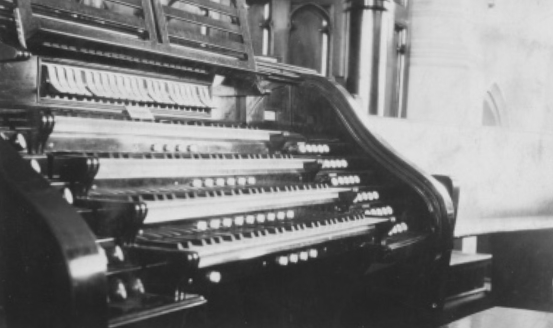
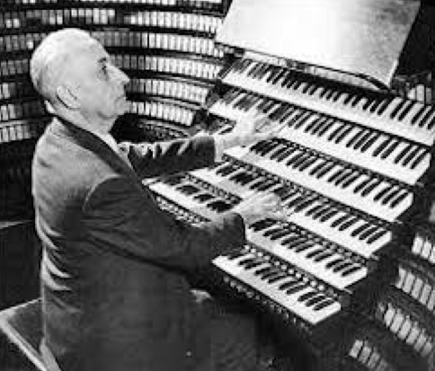

-1-MasterItem.svg)
Stories of Westminster United Church & its People / Page
145
When we built our second church, embedded in the
design of the sanctuary was a full pipe organ with a
dazzling array of pipes as the visual focus for the
congregation. We again turned to a Canadian company,
Casavant Frères of St. Hyacinth, Quebec, to supply us
with a three manual console and 49 stops. However,
it was a large organ that we had ordered and Casavant,
at the time had no large organ installations in Western
Canada. The Company decided to add (at their cost) an
extra set of Solo stops which then required a whole extra
manual. Hence, though our records indicate an order
for one size of organ the picture above shows what Casavant actually installed;
four manuals
and a sizeable addition to the 49 stops in our order.
And it cost us $10,500.00. Casavant called it Op. 481. The organ today is valued
at $1,700,000.
The character of the organ’s sound was deliberately set towards the warm sound of Romantic 19th
century European organs as opposed to the brighter more aggressive sound of
Baroque or 18th
century organs. The Romantic sounding instrument was developed largely in the
19th century
as a response to the need of composers who wanted an instrument which would
blend well with
symphony orchestras. (Orchestra sound was also changing from Baroque and
pre-Baroque times.)
In other words they wanted an instrument that could be used in a concert hall
environment
as opposed to a church environment (think of European cathedrals, massive in
size
and redolent with stone walls and pillars.)
This Romantic sound works well for us today because, while our organ is rarely
played with an orchestra, it is frequently used for organ concerts blending with
the warm acoustic of our sanctuary. In its early years we heard concerts from
Joseph Bonnet, (a French organist who, while living the US, formed Canadian
connections and is buried in Quebec). Marcel Dupre (pictured), well known early
20th century French organist and composer, Lynwood Farnum (a Canadian
Music at Westminster

